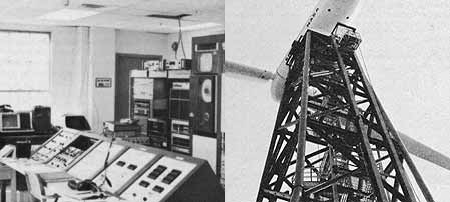
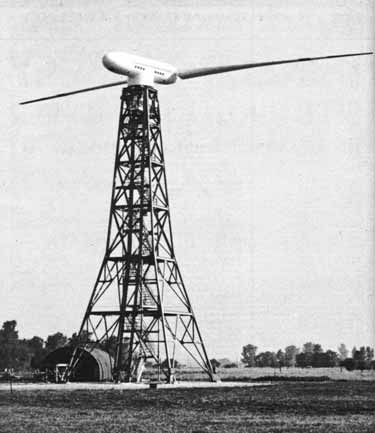
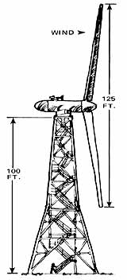
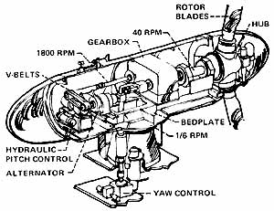

This magazine has spent a lot of time during the past six and a half years talking about, and to, do-it-yourselfers. People who-with little money, less experience, and (sometimes) no one at all to guide them-have plunged right into the construction and operation of their own homestead, little business, or alternative energy system.
And we don't apologize for that at all. Because it always has been (and probably always will be) the "little people" who set the trends that the politicians and the "leaders" and the bureaucrats and big business and big labor later discover and cash in on. This publication was originally designed to foster the interests of [1] "little people " and the planet . . . and we see no reason to change that goal now.
On the other hand, it's no secret that the "big boys" are discovering the back-to-basics, live-better-for-less, preserve-the-planet, recycle-it-or-do-without ideas that us little people have been living for so long. Big labor now spends a lot of time worrying about the environment. Big business has began to see the wisdom of phasing out aerosol cans, new models every year, and shoddy merchandise of all kinds . . . in favor of appliances that use markedly less energy, solar collectors, and quality products that last forever. And every politician in the world, it seems, has developed (at least when talking to us) a sudden interest in organic gardening, saving the bald eagle, and funding at least one "alternative " energy project.
Which brings us to the subject of this interview. Because, believe it or not, NASA-the agency that sends men to the moon and rocket probes to Mars-is now seriously experimenting with (are you ready for this?) . . . windplants. And some of those experiments are even being funded by half of what used to be the Atomic Energy Commission! (And it was only four or five years ago that those same guys were laughing at the "freaks "- us!- who foolishly thought that windplants and waterwheels might still have a few practical applications.)
Well, what the heck. "Live and learn, " we always say. And the so-called "establishment" is certainly learning. Then again, maybe we have a little to learn too. Because, given the chance, those guys with the slide rules and the big government funds can do some work that even has a certain interest for us little guys too. (At least it's more fun watching our government build windplants than it is watching it develop ever-stronger poisons and ever-bigger bombs.)
Jack Bender recently visited NASA's Plumb Brook Station at Sandusky, Ohio, where the currently "world's biggest" windplant is just going into operation. There he talked to Donald Cooksey, Site Project Engineer for NASA's Wind Turbine Generator (WTG) Project. And found Mr. Cooksey to be a warm and a human and a concerned Good Guy.
PLOWBOY: Mr. Cooksey, this is a big windplant. At the top of its arc, the tip of each blade is something like 170 or 175 feet above the surface of the earth and traveling nearly 180 miles an hour. This is, in other words, quite a play toy . . . and obviously beyond the means of most of the backyard experimenters who read THE Mother Earth News (restricted) . Just how much did the plant cost?
COOKSEY: The project is budgeted at $985,000.
PLOWBOY: And where's that money coming from"
COOKSEY: Well, indirectly, from the taxpayers. But more directly from ERDA . . . the Energy Research and Development Administration. The old Atomic Energy Commission, you'll remember, was abolished on January 19, 1975 and-in its place-two new agencies were born: One is the Nuclear Regulatory Commission, which concerns itself with policing the atomic industry. The other, ERDA, is actively engaged in researching and developing energy sources of all kinds.
PLOWBOY: Even wind power.
COOKSEY: Yes, even wind power.
PLOWBOY: Is this 100-kw windplant in ERDA design?
COOKSEY: No, it was engineered-with a little help from some computers-by our own NASA people at Lewis Research Center in Cleveland. We've set it up here on the Lake Erie shore near Sandusky, of course, because of the strong, steady winds that blow in and out across the lake during so much of the year.
PLOWBOY: Is the design an original one all the way through'?
COOKSEY: Oh no. Our Wind Turbine Generator-we call it the WTG, for short-is actually a composite of several other machines which exist now or which once existed. In particular, we were inspired by a Dr. Heutter in Germany. He developed a 100-kw windplant a few years ago and funded its construction himself and brought the machine right up to the point where everything started to work right . . . and then ran out of money. Unfortunately, the last we heard, Dr. Heutter wasn't in business anymore (EDITOR'S NOTE: The last we heard, Dr. Heutter's windplant tore itself apart the first time it was run in a stiff wind) but, while he was still conducting experiments, we brought him over here and picked his brain. A lot of the input for our WTG came directly from Dr. Heutter.
PLOWBOY: Marcellus Jacobs, whom we interviewed in our magazine (see MOTHER NO. 24), has designed and built and sold more windplants than anyone else in the world. He, in fact, is the unchallenged father of the modern wind-driven electrical generator and plants he constructed 30 years ago are still setting the standards for the windplants being built today. Jacobs experimented with a great number of rotor configurations for his machines and lie flatly states that three blades running out in front of a tower is the only way to go. As a matter of fact, he believes that the 1250-kw Grandpa's Knob plant in Vermont which threw a blade a few hundred hours after it was put into service back in the 40's would probably be running yet if it had had three blades out in front instead of the two-bladed downwind rotor that it was given. Yet you've designed your machine with a two-bladed downwind rotor. Why?
COOKSEY: Well we do have other blade designs on the drawing board, and I believe that we'll eventually test them. We're going ahead right now with the particular rotor you see here primarily because it's relatively inexpensive and easy to fabricate. In short, it costs roughly two-thirds as much to build a two-bladed rotor as it costs to construct one with three blades. And the feathering mechanism is much less complicated, etc. It's also obvious that you can save a great deal of money on the construction of a plant this size if you can find a way to cut down on the number of components that make up the machine. Well, by using a downwind rotor, we don't need to add a tail to the WTG . . . and that, of course, cuts our initial costs considerably.
We're not anti-three blades, by the way. A three-bladed rotor is probably the best possible choice for a windplant that sweeps a disc of 20 to 40 feet in diameter, which is exactly the area in which Jacobs worked. For a larger wind turbine, though, we think two blades are better.
PLOWBOY: I've been up to the top of the WTG tower, and I could feel it tremble as the wind up there blew against the rotor. I could see the blades bending a little too. Apparently there isn't much "give" in the rigid hub that holds the rotor. Is that a good idea? Shouldn't there be some flex up there to relieve that strain?
COOKSEY: We've taken pains to make sure that the frequencies of vibration set up by the blades as they spin are not the same as the tower's vibration frequency. If they were, the whole thing could shake itself apart in very short order. That problem, however-as long as the rotor automatically feathers and unfeathers itself so that it maintains a constant speed of 40 rpm when it's in operation-has been engineered out of the windplant.
The slight shaking you felt, on the other hand, was due to the difference in wind loads against the blades as they turn. There's a lot of variables working on that rotor as it spins, you know.
The tower, of course, creates a "wind shadow" at the bottom of the arc. This, plus the fact that the mass of air 40 or 50 feet above the ground's surface can be moving at only 10 or 15 miles per hour while the wind 150 or 160 feet above the ground is moving 50 or 60 miles per hour, can put a tremendous bending moment-out at the top and then in at the bottom-on each blade as it turns. Add in the fact that when you're sweeping a 125-foot circle you're going to get all sorts of little gusts and other variables between any one spot on the disc and any other.
All this does, indeed, put a certain amount of stress and strain on the hub . . . strain that we'd like to relieve. We'll probably be experimenting in the future with [1] blades of some other material or construction that will flex more as they spin and, thereby, absorb a great amount of these variable loads without transmitting them to the hub and/or [2] a teetering hub that will harmlessly dissipate the rotor's flex instead of absorbing it as the fixed hub now does.
PLOWBOY: I know that Lockheed custom-built your original set of blades and you're talking about testing what I assume to be more one-of-a-kind components fabricated just for this project. Have you had to construct everything you've used in this windplant?
COOKSEY: No, we've used existing hardware as much as possible. Almost everything in the mechanical drive system-shafts, bearings, gearbox-came right off the shelf. The alternator is a stock item from General Electric and the gearbox is straight out of the Horsburgh-Scott catalog. That saved us a lot of money and, incidentally, also dictated a great deal about the specifications of the components that we did have to design for the machine.
PLOWBOY: All right. This project is budgeted at $985,000, right?
COOKSEY: Right.
PLOWBOY: And the windplant you've built and are testing for that $985,000 produces 100 kilowatts, of electricity . . . when the wind blows.
COOKSEY: That is correct.
PLOWBOY: Which means that your generator cost $9,850 per kilowatt . . . and that's a pretty penny to pay for "free" power from the wind.
COOKSEY: OK. In the first place, not all of that $985,000 actually went-or is going-directly into our Wind Turbine Generator. Nearly half the money has to be charged off to engineering, test equipment, and salaries for the people who are analyzing the machine's performance.
When you come right down to it, the actual hardware and construction of this plant can be figured at about $500,000 . . . or $5,000 per kilowatt. And we calculate that ,we can now build a second-gene ration machine for only about $2,000 per kw . . . even if we hand-fabricate the blades, hub, bedplate, and other special components that went into our prototype and which we couldn't buy off the shelf. BUT, if someone were to go into production with the WTG and actually mass-produce the plant, that cost could drop down to around $1,000 or even as low as $600 per kilowatt. Which would make the WTG competitive with diesel generators burning 30 cents-a-gallon fuel.
PLOWBOY: What do you mean "if someone were to go into production with the WTG"? Are you already shooting for manufacture of the unit?
COOKSEY: Well we're still a long way from that. The machine you see here is only the first of several prototypes that we hope to develop in what is a five-year-long, I 1-million-dollar research project. We're already in the process of writing specifications for two more windplants of 200 to 300 kilowatts and we're considering the design of generators all the way up to the 1500-kw class. So we still have a lot of work ahead of us before we'll even know if we're on the right track or not.
But to answer your question more directly: Yes, the whole purpose of this project is the development of a tried-and-tested, trouble-free, wind driven generator that a company-or even an individual-can set up to manufacture. We'd like to have a whole manual full of such machines, in fact. Everything from a little 4-kilowatt model up to and past a 1500-kw plant. Then you could just thumb through the book and pick the one that best suits your application and send away and get the prints and build it. All the work we do, you know, is freely available to the public.
PLOWBOY: When do you expect to publish that manual?
COOKSEY: I couldn't really say, but I'm sure that-at the earliest-it won't be available until after we've completed our five-year program. Probably longer. These things never go as fast as you'd like them to.
Right now, for instance, we're trying to check the 100-kw plant out at 20 rpm-half its designed operational speed-and we can't even do that until we've debugged the computer that converts our instrument readings to engineering units. We thought we'd have our 20-rpm and 30-rpm tests run by now and that we'd be analyzing the windplant's operation at its full 40 rpm at this time . . . but, thanks to that computer, we're still fiddling around with the 20-rpm analysis.
I hasten to add, by the way, that the 100-kw WTG's performance is checking out just as predicted at 20 rotations per minute. The stresses in the blades-the operation of the hub and bearings and shafts and all the rest-are all coming out within predicted limits. So it's not the windplant itself that's holding us up . . . it's the calibration of the test equipment.
PLOWBOY: But is the 100-kw turbine actually running the way it was designed to operate? As I understand it, you're manually controlling some of the machine's functions that should be automatically directed by equipment within the windplant itself.
COOKSEY: Oh, sure. That's one of the areas we're anxious to get on to. Once we've checked the WTG out at its full operational speed, we want to try running it in a mode completely controlled by what we call a micro-processor . . . which is just a very simplified mini-computer. It's just printed circuit cards-nothing complicated at all-but it contains all the commands and logic that are needed to run the machine completely unattended.
Now this is actually no big deal, but we do have to progress on to this step in our program before we'll have a windplant that's going to be practical for a small community. A 100-kw generator can furnish all the electricity that 10 or 15 or, in some cases, up to 30 houses ever need . . . but it's not a very practical method of producing that power if someone has to sit around day and night monitoring the machine all the time. There's just too many man-hours of labor involved.
We can live with manually controlling our prototype for a few weeks until we have all our test equipment functioning properly. But our WTG isn't going to appeal to anyone until we have it operating automatically all by itself.
PLOWBOY: What about the excess electricity that your plant produces when the wind is blowing hard but nobody has many appliances turned on? And what about the reverse . . . when there's no wind at all but everybody wants electricity? Do you plan on feeding the WTG's output into a bank of batteries . . . or in storing that output in some other way?
COOKSEY: No. Our design calls for automatic switching gear that allows the WTG to synchronize its output with the alternating current already pulsing through the local power grid. The houses in the area will be feeding off that grid all the time. The windplant won't be connected to the system at all, however, when it's not running. It will switch itself into the grid, though, just as soon as the wind begins to blow hard enough to make it produce usable juice. At that time, the plant will synchronize its output with the AC in the local powerlines . . . and begin feeding its current in. In effect, the grid-which is already there and available-becomes the storage battery for the wind-driven generator.
PLOWBOY: That sounds good. But, of course, the power companies already do the same thing with new coal-burning generators and with nuclear power plants. Do you really know that your windplants are any better than other producers of electricity? Have you made environmental studies of the impact your turbines might have on a given area?
COOKSEY: Well one of the reasons we're concentrating on 100-kw and bigger units right now is because we think it's better to feed 15 or 30 or 300 homes from a single windplant than it is to try to provide every house in a neighborhood with its own personal wind-driven generator. Can you imagine just how impractical it would be-and how ugly a subdivision would look!-if each and every home had a 50-foot tower topped with a 30-foot wind charger stuck out in the backyard? TV antennas are bad enough! A single big plant-maybe large enough to feed all the dwellings in a mile-square area-might be sorta nice, though. I don't know, but it might be.
That one big plant, on the other hand, might have some drawbacks of its own. What effect, for instance, will it have on wildlife in the area? Will it scare away all the rabbits and deer? Will it prove to be a hazard to migratory birds? The National Science Foundation is working with the Battell Institute down in Columbus, Ohio on these questions right now.
And what about the micro-climate around a very large windplant? Will that rotor stir up the passing air mass enough to' change the frost characteristics of the neighborhood? We don't know. But we aim to find out.
PLOWBOY: Well let's say that you find the answers to these questions . . . and that the answers are good ones. Let's say, in short, that winddriven generators are really great. They produce meaningful quantities of electricity and they don't disturb the environment. We still aren't going to put them everywhere because the wind doesn't blow regularly everywhere. Where will we put the plants?
COOKSEY: Out on the Great Plains, obviously. Along some ridges in the mountains. And on the coasts of-and out on some of the islands in-a great many bodies of water. Islands can be especially good locations for windplants . . . especially if they're low and don't obstruct the wind that comes blowing across all that flat water. The islands in Lake Erie would be good. Or islands in the Caribbean, such as Puerto Rico. The average wind velocity on some of the Caribbean island coasts is something like 35 miles per hour. That's just ideal for this type of generator.
This test machine consists of a rotor turbine, drive train assembly, alternator, yaw system, tower, and controls. The rotor is 125 feet in diameter, its optimum operating speed is 40 rotations per minute, and it produces 133 kilowatts of power at the hub when turned by a mass of air moving 18 miles per hour.
The windplant has no tail to "point" its blades into the wind. Instead, the yaw system allows the whole unit to pivot on top of the tower so that the rotor automatically positions itself downwind of the support. This makes it impossible for the wind to ever "push" a blade into the tower (as sometimes happens to windplants with rotors that turn upwind of their supports). And-since the tower is not subjected to the force of the wind, then blanketed by a passing blade, then left exposed again, etc., during operation-the NASA unit's tower must absorb far less dynamic interference than the structures which support most windplants.
(EDITOR'S NOTE: This "downwind operation" idea may be good and it may not. Marcellus Jacobs-who sold 50 million dollars' worth of windplants back in the '30's, '40's, and '50's and whose machines, each of which had three blades that ran upwind, are still known as absolutely the finest and most trouble-free ever built-is not impressed by the "downwind" design philosophy. "If you use only two blades and run them behind the tower," he says, "you subject those blades to extreme forces every time they rotate. First they're being pushed by the wind, then they're shielded by the support, then they're catching the force of the wind again, then they're protected by the tower, and so on. This is what caused one of the blades to sever itself from the big Grandpa's Knob plant back in 1945. You're far better off to use three blades, mount them out in front, and beef up the tower enough to hold them. I tested all those ideas 20, 30, 40 years ago and I know. ")
The 133 kilowatts of energy produced by the 125-foot rotor on the NASA windplant becomes-after the rotor's 40 rpm is stepped up to 1800 rpm by the unit's drive train-a usable 100 kw at the alternator. The rotor, yaw system, and drive train are all mounted on top of a 100-foot tall tower and the controls for the windplant are currently located on the ground in a monitoring laboratory.
BLADES: The rotor is fitted with two all-metal blades. Each is 62.5 feet long and weighs approximately 2,000 pounds. The blades use a NACA 23000 airfoil and each one is twisted 26.5° so that its fat, slow-turning hub will bite into the air with a greater angle of attack than does its slender, fast-moving (180 mph) tip. They were fabricated by the Lockheed Corporation-for $320,000 the set!-and are designed to produce 133 kilowatts of power when rotated at 40 rpm by an 18-mph wind.
HUB: The rotor blades are connected to the windplant's main low-speed drive shaft by a fixed hub (that is, the hub is rigidly bolted to the shaft and only the blades themselves are allowed to twist-thereby changing their pitch-as the whole assembly rotates). The pitch-change mechanism consists of a hydraulic pump, pressure control valve, actuator, and gears. The pump is mounted separately within the windplant's main housing and its hydraulic fluid is brought into the shaft via rotating seals. The pressure of the fluid pushes the rack of a rack and pinion actuator which, in turn, controls a master gear that feathers and unfeathers the blades through bevel gears.
The high torque and low (40) rpm of the rotor is changed to low torque and high (1800) rpm by a 45-to-1 ratio gearbox. The output shaft of this box is then connected to the input shaft of a 100-kw alternator by V-belts. For safety's sake, the gearbox is designed to handle 176 kw (236 horsepower), which is a load approximately one-third greater than the rotor should ever deliver.
The 1800-rpm synchronous alternator is self-cooling and contains a directly connected brushless exciter and regulator (the regulator includes power, potential, and current transformers). The 1,425-pound alternator is rated at 125 kva, 0.8 power factor, and 480 volts, and is a three-phase, 60-hertz, Y-connected unit.
The rotor, drive train, and alternator of the NASA Wind Turbine Generator (WTG) are all supported on a bedplate that is enclosed in a streamlined fiberglass housing and mounted on bearings so it can be rotated (yawed) by a geared "yaw control" assembly. Through the use of this control, the whole windplant can be turned on top of the tower to "point" the rotor into and out of its proper downwind position as the direction of the wind changes. This rotation can take place even when the machine is not generating electricity.
It's interesting to note that, at only 1/6 rpm, this yawing mechanism does not move fast enough to either overstress the rotor's shaft (the gyroscope-like effect of that giant propeller could snap the shaft like a toothpick if the windplant were turned quickly) or allow the generator to constantly track the light and variable wind shifts that are always taking place. The yaw is plenty quick enough, however, to keep the huge plant's rotor always pointed downstream of the general movement of the passing air mass.
The NASA WTG is mounted on top of a tower that is 100 feet tall. The structure is made of steel and is of the "pinned truss" design. The tower alone weighs 40,000 pounds (60,000 pounds, counting ladders and platforms) and is anchored to a concrete foundation. There is far more to this structure than meets the eye: In addition to just holding up the windplant on its top, the tower must with stand wind and rotor-thrust loads-both steady and cyclic-during the generator's operation.
The WTG is designed to self-feather its blades whenever the air mass moving past the rotor is traveling at less than eight miles per hour. When the breeze reaches a velocity of eight mph, the blades are set to capture that energy and begin converting it into electricity . . . only a little at first, then more and more until-in an 18-mph wind-the plant is producing approximately 100 kilowatts of "juice".. If the wind's speed continues to increase, the rotor then automatically begins to feather itself so that the generator turns out the same 100 kw all the way up to an airspeed of 40 miles per hour. And at windspeeds of more than 40 mph, the blades really begin to feather themselves in earnest until, at 60 mph, the plant shuts down completely to protect itself from possible damage. Although all these actions will be taken automatically by built-in controls once the WTG is in full operation, the feathering of the blades is being controlled by an operator during the test program now being conducted on the windplant.
Also, during these initial tests, the alternator is being operated asynchronously with a load bank. Later, when the unit is "really" running, the WTG will synchronously feed its output into the local power grid.
|
 NASA'S 100-KILOWATT WIND TURBINE GENERATOR (WTG): |
 NASA'S 100-KILOWATT WIND TURBINE GENERATOR (WTG): |
 |
|
 |
|
|